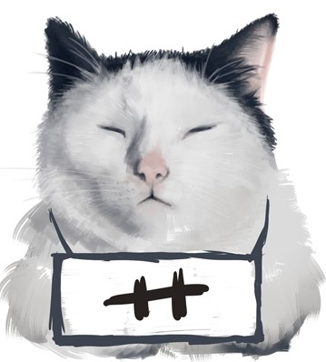

push所有分支 git push
将本地分支推到远程主分支 git push origin master
将本地主分支推到远程(如无远程主分支则创建，用于初始化远程仓库) git push -u origin master
Git与GitHub
GitHub是目前为止最大的开源Git托管服务，并且是少数同时提供公共托管和私人托管服务的站点之一。
接下来的内容主要描述讲解如何使用git来将本地仓库与GitHub账户的仓库建立连接。
建立本地git仓库
进入你要同步的本地项目的根目录下，执行git命令：
git init
将项目中所有的文件添加到仓库中
git add .
如果只想添加某个特定的文件，只需把 . 换成特定文件名即可。
将add进来的文件提交到仓库